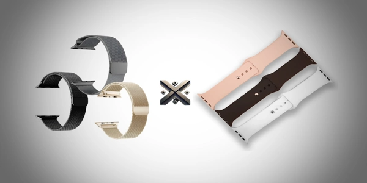

Se você tem um smartwatch ou está pensando em adquirir um, já deve ter percebido que a escolha da pulseira faz toda a diferença no visual, conforto e até na durabilidade do acessório. Entre tantas opções no mercado, duas se destacam pela popularidade e funcionalidade: a pulseira Milanese de aço inoxidável e a pulseira de silicone.
Mas afinal, qual a melhor pulseira para smartwatch: Milanese ou Silicone? Neste artigo, vamos explorar todos os detalhes de cada uma, esclarecer dúvidas frequentes como o que é, para que serve e o que significa cada modelo, além de indicar onde comprar pulseiras de qualidade com segurança.

A pulseira Milanese é feita em aço inoxidável entrelaçado em malha fina, inspirada no design italiano que surgiu em Milão, no século XIX — daí o nome "Milanese". Esse modelo combina elegância clássica com tecnologia moderna, sendo uma escolha popular para quem busca um visual sofisticado, seja em ambientes profissionais ou eventos sociais.
A pulseira de silicone é um modelo mais casual, esportivo e altamente resistente à água e suor. Feita em silicone flexível, ela se adapta facilmente ao pulso e é perfeita para o uso diário, treinos na academia, corrida ou atividades ao ar livre.
Ambas servem para prender o smartwatch ao pulso com segurança e conforto, mas vão além da função básica. Veja como cada uma se encaixa em diferentes estilos de vida:
| Características | Pulseira Milanese | Pulseira de Silicone |
|---|---|---|
| Material | Aço inoxidável | Silicone flexível |
| Peso | Média | Leve |
| Conforto | Alta (em uso social) | Altíssima (uso esportivo e diário) |
| Ajuste | Magnético ou fecho | Fivela tradicional |
| Durabilidade | Alta | Alta |
| Estilo | Elegante e clássico | Casual e moderno |
| Custo-benefício | Médio a alto | Baixo a médio |
| Manutenção | Requer limpeza seca | Fácil de lavar com água |
O conforto depende muito da rotina do usuário. Para quem passa o dia no escritório ou participa de eventos formais, a pulseira Milanese proporciona elegância e respirabilidade. Já quem vive uma rotina intensa, cheia de movimento e exposição ao calor, encontrará na pulseira de silicone uma leveza e praticidade incomparáveis.
Dica: quem deseja mais versatilidade pode ter ambas e alternar conforme a ocasião.
Usar uma pulseira Milanese no seu smartwatch é mais do que uma escolha funcional — é uma afirmação de estilo. Ela representa sofisticação, cuidado com a aparência e gosto por acessórios clássicos. Além disso, transmite uma imagem mais profissional, ideal para quem quer passar confiança no ambiente de trabalho.
Usar uma pulseira de silicone é demonstrar praticidade, energia e liberdade. Ela é símbolo de uma vida ativa, confortável e descomplicada. Quem escolhe esse tipo de pulseira costuma buscar o máximo de conforto sem abrir mão de um estilo moderno e vibrante.
Para garantir originalidade, boa durabilidade e entrega rápida, recomendamos comprar com uma loja confiável:
👉 Store Alexandre Games – variedade em pulseiras Milanese e Silicone compatíveis com Apple Watch e outras marcas de smartwatch.
A melhor pulseira é aquela que se encaixa no seu estilo de vida. Considere os seguintes pontos:
Ambos os modelos acompanham as cores da moda e permitem personalização:
Combine com cases, roupas ou outros acessórios para criar seu estilo único!
Ambas têm seus méritos. Se você procura elegância e sofisticação, vá de Milanese. Se prefere praticidade e conforto, a de silicone é a ideal.
Dica final: tenha os dois modelos e alterne conforme a ocasião!
👉 Compre com segurança na Store Alexandre Games e encontre pulseiras estilosas, duráveis e com ótimo custo-benefício!
Gostou deste comparativo? Compartilhe com seus amigos e ajude outros a fazerem a melhor escolha para seus smartwatches!